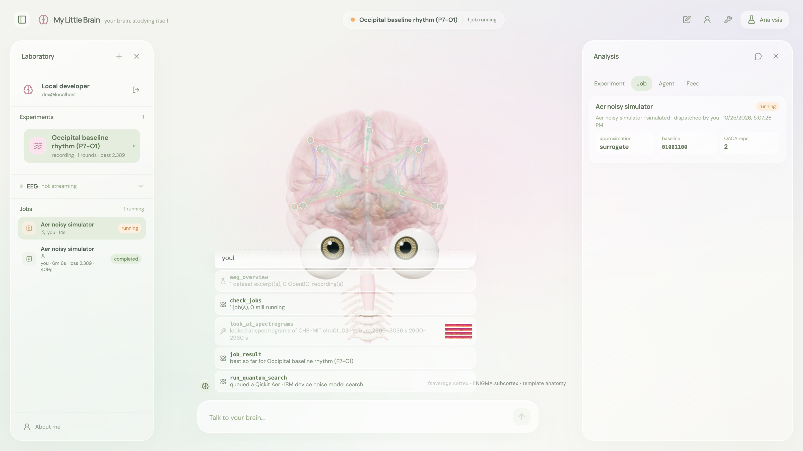
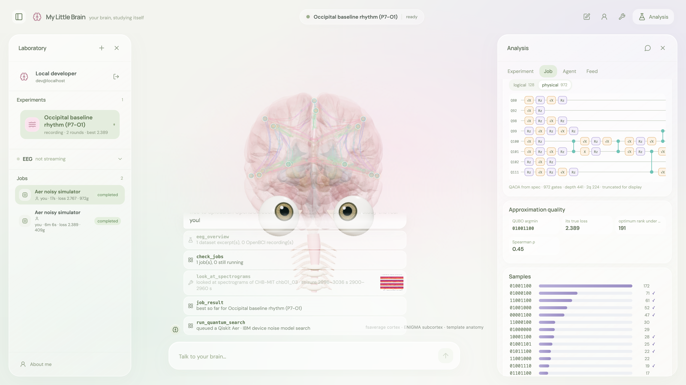
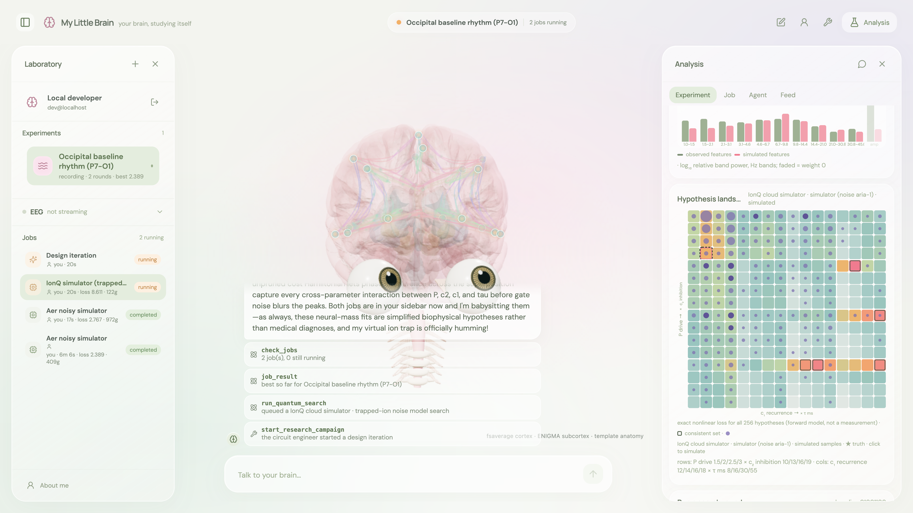
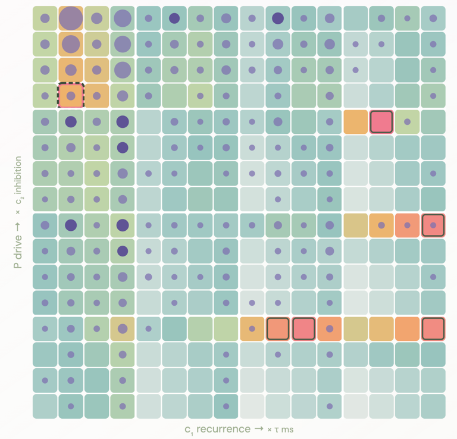
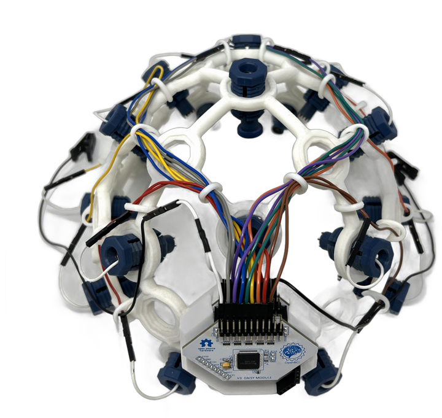
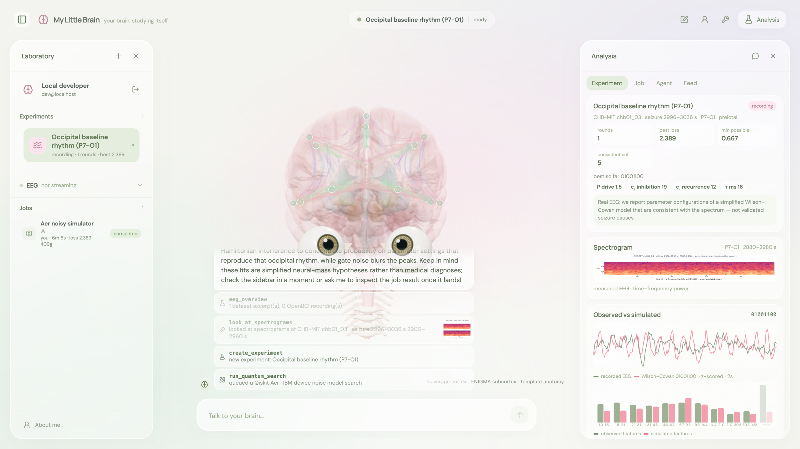

It knows you
your notes · your live EEG · your questions



it watches your live EEG
you chat with your brain
it designs quantum circuits
results land here
It studies itself
48 / 256simulations to recover a hidden brain state
42 gatesa circuit Gemini wrote itself (from 106)
52 vs 454gates on IonQ vs IBM, same problem
τ 16→55 msseizure windows point to slower synapses
OpenQASM written by Gemini 4 Argon · Qiskit Aer, IBM Torino noise · job f8fdb905…
OPENQASM 2.0;
…
qreg q[8];
creg meas[8];
ry(1.7) q[7];
x q[6];
x q[5];
x q[2];
ry(2.5) q[1];
cx q[7],q[6];
cx q[6],q[4];
cx q[7],q[3];
ry(-0.55) q[3];
…
model hypotheses, not diagnoses · no quantum-advantage claim

all 256 brains, scored against your EEG (from the app)
EEG → quantum state
2,000 voltages a second → 10 numbers8 channels × 250 Hz, condensed into band powers
8 qubits hold all 256 possible brains4 model dials × 2 qubits · a 28-dim Hilbert space |ψ⟩ = Σ αi |i⟩
Your EEG decides which brains get louderthe mismatch becomes the circuit’s energy; QAOA amplifies the best fits
Measure → re-simulate → verify
we encode hypotheses, not raw EEG · each extra bit per dial multiplies the space · no quantum-advantage claim at 256
Amplify, don’t scan
Classical · check one brain at a time
Quantum · make the right one louder
checked 0 / 256 · O(N)
round 0 / 12 · O(√N)
Grover amplitude amplification, exact for N = 256 · our QAOA uses the same interference heuristically — no speed-up claimed at 256
Behind the scenes

OpenBCI UltracortexWeb Serial · Chrome

The appchat · 3D brain · experiments
Gemini 4 Argonagent · Cloud Run
Google Cloud

Cloud Run

Firestore
Storage
Cloud Tasks
Secrets

Registry
Sign-In
QAOA · thermodynamic sampling
validated by forward simulation
4 brain parameters × 2 bits = 8 qubits = 256 hypotheses · nonlinear loss → QUBO surrogate → exact Ising map